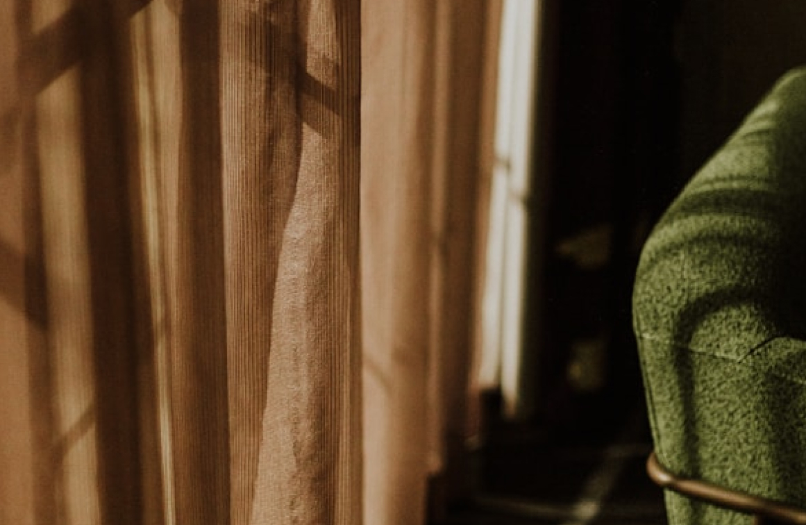
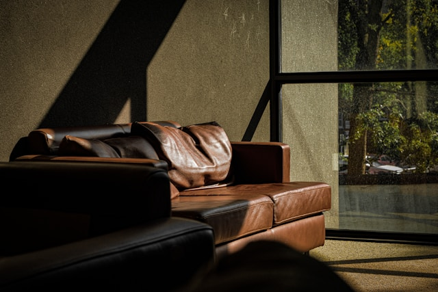
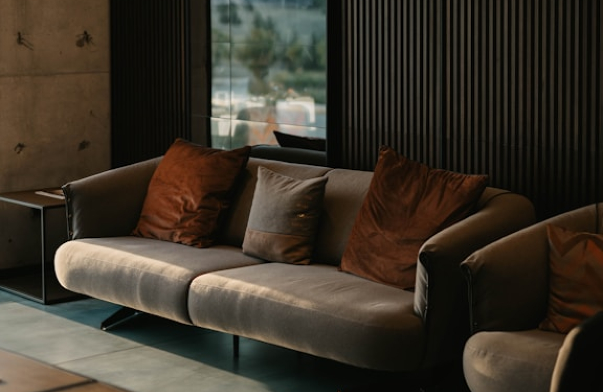
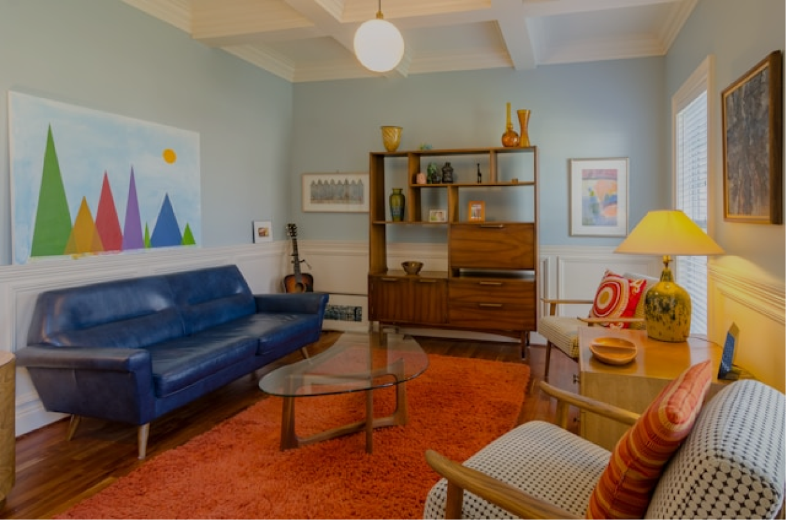
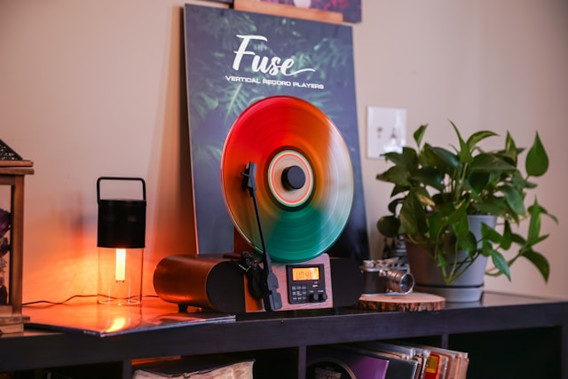

The following table shows all the images and text used on the website along with other reference sources.
| Index | Content | Author | Link |
|---|---|---|---|
| 01 | Charles Loyer | https://unsplash.com/photos/green-leather-sofa-near-wall-in-front-of-table-QN6fCROYdWM | |
| 02 |  |
Taylor Friehl | https://unsplash.com/photos/a-large-room-with-a-lot-of-plants-and-couches-GIbrQem17Zg |
| 03 |  | Priscilla Du Preez | https://unsplash.com/photos/brown-curtain-in-a-room-432c5o60XsA |
| 04 |  |
Avi Richards | https://unsplash.com/photos/wooden-armchair-on-corner-in-front-of-bed-iWpCA0aTMnk |
| 05 |  |
Hanna Balan | https://unsplash.com/photos/orange-chair-beside-black-and-gray-speaker-4Dxuz--8TcY |
| 06 |  | Tarik Haiga | https://unsplash.com/photos/brown-leather-sofa-P7Zb-sF62x0 |
| 07 |  |
Martin Péchy | https://unsplash.com/photos/brown-leather-2-seat-sofa-bpg-ngqrPc8 |
| 08 |  |
Charlotte May | https://www.pexels.com/photo/cozy-living-room-with-sofa-5825527/ |
| 09 | Lukas Bato | https://unsplash.com/photos/black-flat-screen-tv-on-brown-wooden-tv-rack-9vWhrKcn2pE | |
| 10 |  |
Taylor Friehl | https://unsplash.com/photos/a-living-room-with-a-couch-and-a-lamp-_S5dy_Qk5GY |
| 11 |  | aranprime | https://unsplash.com/photos/brown-and-white-couch-beside-window-KbytCpI1i5I |
| 12 |  |
Cater Yang | https://unsplash.com/photos/tufted-brown-leather-armchair-Lkon9oS2lJo |
| 13 |  | Jens Behrmann | https://unsplash.com/photos/blue-leather-sofa-MvTkaGZuXto |
| 14 |  | Robert Penaloza | https://unsplash.com/photos/a-record-player-sitting-on-top-of-a-book-shelf-lTiUjPly9QY |
| 15 |  |
Emilio Garcia | https://unsplash.com/photos/white-table-lamp-on-brown-wooden-table-RTGoHJdeaZ8 |
| 16 | Taylor Friehl | https://unsplash.com/photos/a-living-room-filled-with-furniture-and-a-large-window-Bd47kFlgyuM | |
| 17 |  |
Chloé Chavanon | https://unsplash.com/photos/a-living-room-with-a-couch-and-a-book-shelf-mXn5XSs4qG8 |
| 18 | Albert Dera | https://unsplash.com/photos/mans-grey-and-black-shirt-ILip77SbmOE | |
| 19 | Modern design grew out of the decorative arts, mostly from the Art Deco, in the early 20th century.One of the first to introduce this modernist style was Frank Lloyd Wright, who had not become hugely popularized until completing the house called Fallingwater in the 1930s. Modern art reached its peak during the 1950s and '60s, which is why designers and decorators today may refer to modern design as being "mid-century".Modern art does not refer to the era or age of design and is not the same as contemporary design, a term used by interior designers for a shifting group of recent styles and trends | Wikipedia | https://en.wikipedia.org/wiki/Interior_design |
| 20 | It is a movement in interior design, product design, graphic design, architecture and urban development that was popular in the United States and Europe from roughly 1945 to 1970 during the United States's post-World War II period. The term was used as early as the mid-1950s, and was defined as a design movement by Cara Greenberg in her 1984 book Mid-Century Modern: Furniture of the 1950s. It is now recognized by scholars and museums worldwide as a significant design movement. The MCM design aesthetic is modern in style and construction, aligned with the Modernist movement of the period. It is typically characterized by clean, simple lines and honest use of materials, and generally does not include decorative embellishments. | Wikipedia | https://en.wikipedia.org/wiki/Mid-century_modern |
| 21 | Furniture of the 1970s refers to the style of furniture popular in the 1970s. Often, the furniture would be laid with bold fabric patterns and colors. Bold designs and prints were also used profusely in other decor. Other design elements found in 1970s furniture and interior decorating included the use of the colors brown, purple, orange, and yellow (sometimes all in the same piece of fabric), shag-pile carpet, textured walls, lacquered furniture, gaudy lampshades, lava lamps, and molded plastic furniture. Another major aspect of 1970s furniture is the use of teak wood.The use of teak in fashionable furniture and panelling regained popularity in the 1960s and items became chunkier as it progressed into the 1970s. Because of the popularity of wood in homes, dark color palettes also became more widely used as the 1970s progressed. In the mid-to-late 1970s, pine wood began to replace teak wood, and color palettes became even darker. | Wikipedia | https://en.wikipedia.org/wiki/1970s_in_furniture |
| 22 | Other text | Jessy | _ |